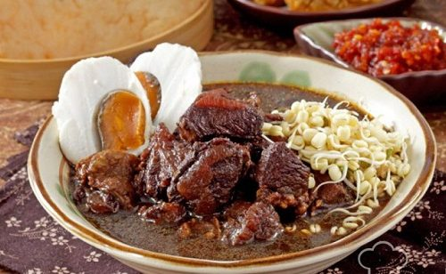
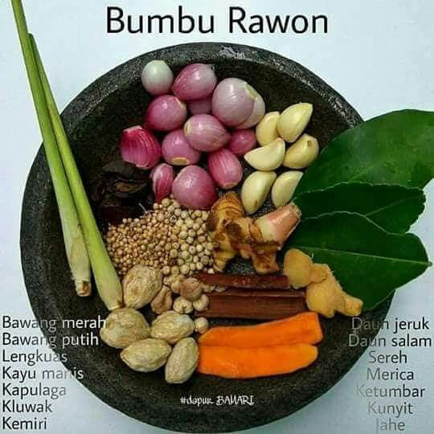

RAWON

Rawon adalah masakan Indonesia berupa sup daging berkuah hitam sebagai campuran bumbu khas yang menggunakan kluwek. Rawon, meskipun dikenal sebagai masakan khas Jawa Timur, dikenal pula oleh masyarakat Jawa Tengah sebelah timur (daerah Surakarta).
#BAHAN-BAHAN
